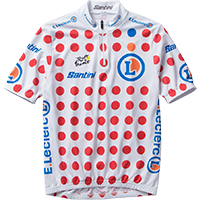
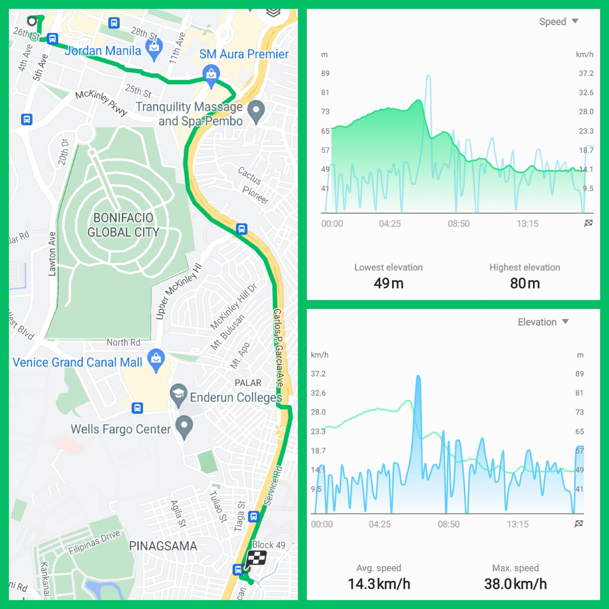
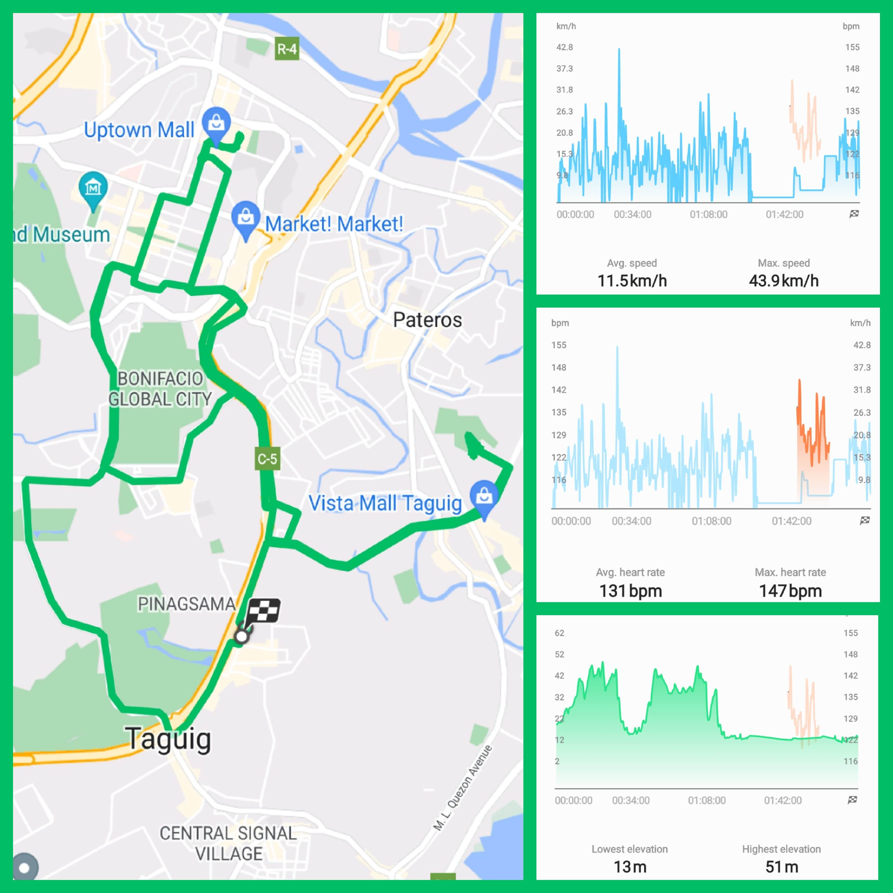
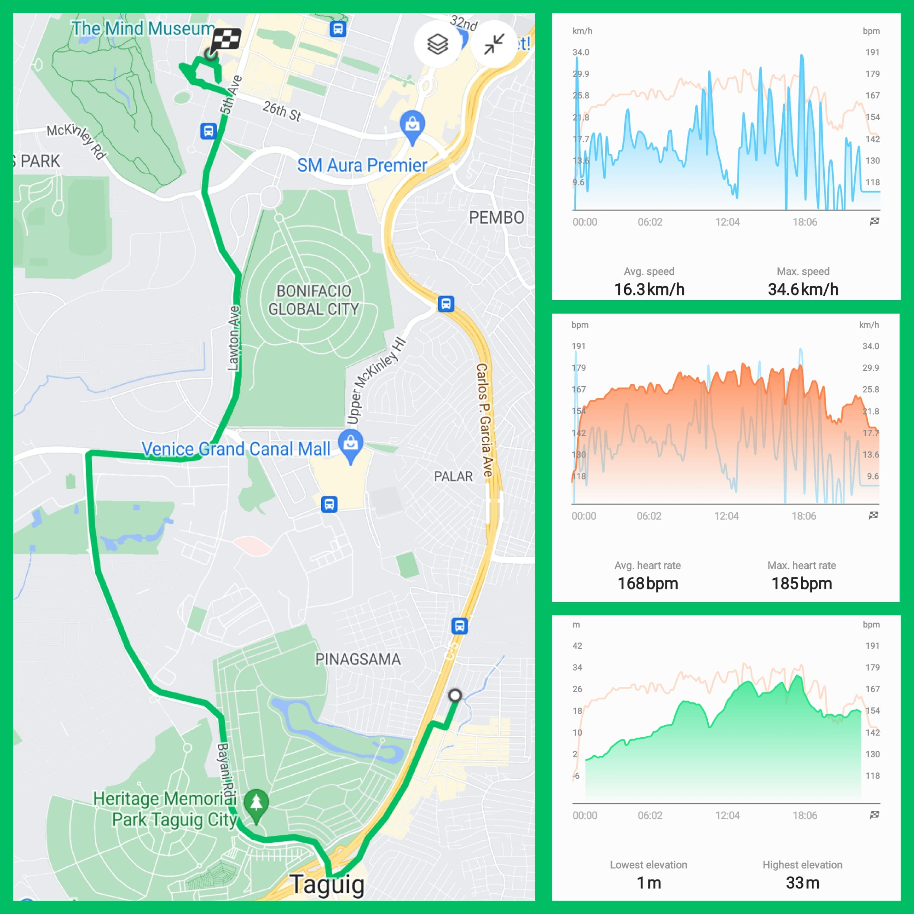
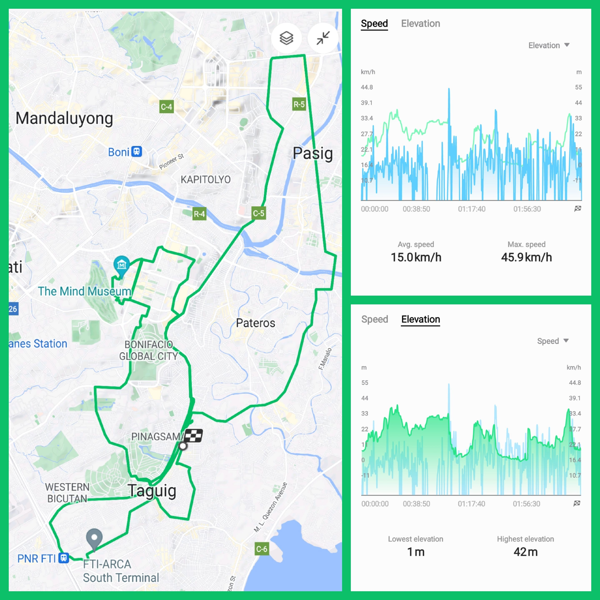
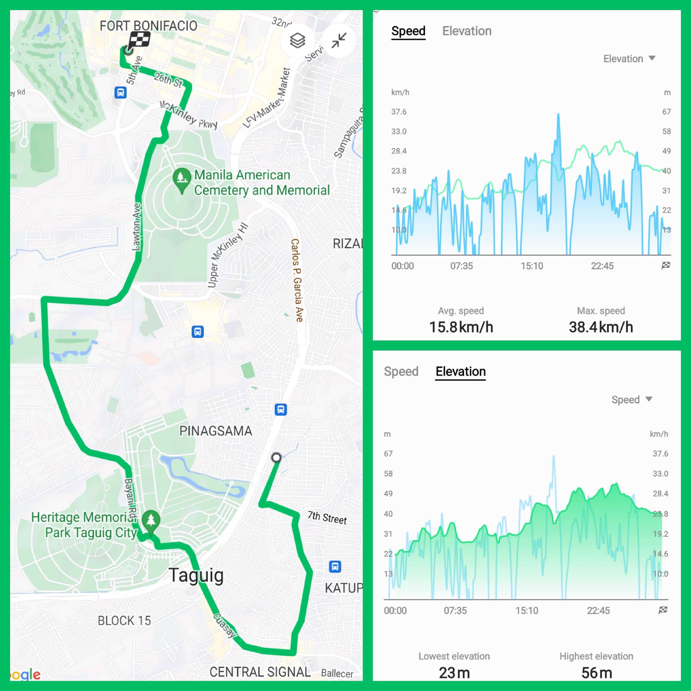

Two Wheels, One Soul
Freedom on every pedal stroke
Freedom on every pedal stroke
 Close
Close| Badge | Place | Description | Award | Jersey |
|---|---|---|---|---|
 | 1st Place (General Classification) | This tagging is for being first place in general areas other than the average speed and max altitude. - aka "Overall Award" | aka "maillot jaune": The yellow jersey is the most coveted piece of kit in professional cycling. The wearer is a rider who has completed the race in the least amount of time, and as such tops the overall or general classification (GC) of the race. |  |
 | 1st Place (Speed) | This tagging is for being first place in terms of average speed maintained. - aka "Sprinter's Award" | aka "maillot vert": The green jersey relates to points awarded to riders according to the position they finish on each stage, with additional points for intermediate sprints during some stages also on offer. It is awarded to the rider with the most points. Sometimes it's a sprinter's game, sometimes more of an all-rounder. |  |
 | 1st Place (Altitude) | This tagging is for being first place in terms of max altitude reached. - aka "Mountain King Award" | aka "maillot à pois rouges": The white-with-red-dots jersey is given to the rider with the most mountains points (awarded to riders who manage to summit classified climbs first). Points vary depending on the category of each ascent, with more difficult climbs awarding more mountains points. |  |
| 2nd Place Overall | This tagging is for being second place in general areas. | N/A | N/A | |
 | 3rd Place Overall | This tagging is for being third place in general areas. | N/A | N/A |
| Terminology [Acronym] | Description | Terminology [Acronym] | Description |
|---|---|---|---|
| Date [DAT] | The event to which I recorded my cycling data. Format: MM/DD/YYYY | Distance [DIS] | The extent or amount of space between two points, typically the start and end of my cycling route. Unit: km |
| Purpose [PUR] | The objective of recording my cycling data. | Achievement [ACH] | Accomplishments obtained after recording my cycling data. |
| Duration Total [DT] | The time between the start and end of recording. This includes both movements in between two points and the pauses (i.e during stoplight in the intersection). Unit: HH:MM:SS | Calories Total [CT] | The amount of calories burned on the duration of cycling which includes both movements in between two points or resting in place. Unit: kcal |
| Average Heart Rate [AHR] | The average beats per minute of your heart while cycling or resting in place. Unit: bpm | Max Heart Rate [MHR] | The number of beats per minute your heart can reach during cycling. Unit: bpm |
| Weather [WEA] | The state of the atmosphere at a place and time as regards to heat, dryness, sunshine, wind, rain, etc. Unit: Celsius | Map [MAP] | A diagrammatic representation of an area of land showing physical features, cities, roads, etc of my cycling route. |
| Average Pace [AP] | The average time it takes to cover 1 kilometer. Unit: ' " / km | Max Pace [MP] | The minimum time it takes to cover 1 kilometer. Unit: ' " / km |
| Average Speed [AS] | The average distance covered in a given time. Unit: kph | Maximum Speed [MS] | The maximum distance covered in a given time. Unit: kph |
| Elevation Gain [EG] | Total amount you will climb in a day. Unit: m | Elevation Loss [EL] | Total amount you will descend in day. Unit: m |
| Lowest Elevation [LE] | The lowest height in reference to sea level. Unit: m | Highest Elevation [HE] | The highest height in reference to sea level. Unit: m |
| Total Ascent Gradient [TAG] | Total movement towards the nearest maximum. Unit: km | Total Descent Gradient | Total movement towards the closest minimum. Unit: km |
| Rank (Speed) | Average Speed | Max Speed | Average Pace | Max Pace | Rank (Altitude) | Elevation Gain | Lowest Elevation | Highest Elevation | Total Ascent Gradient | Total Descent Gradient |
|---|---|---|---|---|---|---|---|---|---|---|
| 17.3 kph (Jun 5, 2024) | 56.9 kph (Jun 5, 2024) | 03'27"/km (Jun 5, 2024) | 01'03"/km (Jun 5, 2024) | | 45 m (Jun 19, 2024) | 23 m (Jun 19, 2024) | 114 m (Feb 7, 2024) | 0.37 km (Jun 19, 2024) | 0.20 km (Jun 19, 2024) |
| 16.3 kph (May 29, 2024) | 41.5 kph (May 22, 2024) | 03'40"/km (May 29, 2024) | 01'26"/km (May 22, 2024) | 40 m (May 15, 2024) | 18 m (Feb 14, 2024 | Apr 3, 2024) | 56 m (Jun 19, 2024) | 0.36 km (Feb 14, 2024 | Feb 21, 2024) | 0.12 km (May 29, 2024) | ||
| 15.8 kph (Jun 19, 2024) | 38.4 kph (Jun 19, 2024) | 03'47"/km (Jun 19, 2024) | 01'33" (Jun 19, 2024) | | 35 m (May 22, 2024 | May 29, 2024 | Jun 5, 2024) | N/A | 51 m (May 22, 2024) | N/A | 0.1 km (May 15, 2024) |
| Rank (GC) | Duration Total | Distance | Calories Total | Average Heart Rate | Max Heart Rate | Weather |
|---|---|---|---|---|---|---|
| 00:22:30 (Mar 20, 2024) | 7.99 km (Jun 19, 2024) | 353 kcal (Jun 5, 2024) | 168 bpm (May 29, 2024) | 187 bpm (May 20, 2024) | 34 Celsius (May 15, 2024) |
| 00:23:40 (Feb 14, 2024) | 6.56 km (May 29, 2024) | 308 kcal (May 29, 2024) | 167 bpm (May 22, 2024) | 186 bpm (Jun 5, 2024) | 33 Celsius (May 8, 2024 | May 22, 2024 | May 29, 2024) | |
| 00:27:41 (May 15, 2024) | 6.31 km (Jun 5, 2024) | 283 kcal (Feb 7, 2024) | 156 bpm (Jun 5, 2024) | 185 bpm (May 29, 2024) | N/A |
| Rank (Speed) | Average Speed | Max Speed | Average Pace | Max Pace | Rank (Altitude) | Elevation Gain | Lowest Elevation | Highest Elevation | Total Ascent Gradient | Total Descent Gradient |
|---|---|---|---|---|---|---|---|---|---|---|
| 18.3 kph (May 22, 2024) | 60.1 kph (May 15, 2024) | 03'15"/km (May 22, 2024) | 00'59"/km (May 15, 2024) | | 58 m (Apr 17, 2024) | 49 m (Feb 21, 2024) | 80 m (Feb 21, 2024) | 0.05 km (Mar 20, 2024) | 0.31 km (Feb 7, 2024 | May 22, 2024) |
| 17.4 kph (May 15, 2024) | 47.5 kph (Jun 5, 2024) | 03'26"/km (May 15, 2024) | 01'15"/km (Jun 5, 2024) | 37 m (Feb 7, 2024) | 39 m (Jun 19, 2024) | 70 m (May 29, 2024) | 0.04 km (Jun 19, 2024) | N/A | ||
| 17.2 kph (Jun 5, 2024) | 44.1 kph (May 22, 2024) | 03'28"/km (Jun 5, 2024) | 01'21" (May 22, 2024) | | 34 m (Feb 21, 2024) | 37 m (Feb 14, 2024 | May 29, 2024) | 69 m (Jun 19, 2024) | 0.01 km (Feb 7, 2024) | 0.30 km (Jun 19, 2024) |
| Rank (GC) | Duration Total | Distance | Calories Total | Average Heart Rate | Max Heart Rate | Weather |
|---|---|---|---|---|---|---|
| 00:17:49 (May 15, 2024) | 7.37 km (Jun 19, 2024) | 236 kcal (Jun 19, 2024) | 151 bpm (May 22, 2024) | 179 bpm (May 29, 2024) | 33 Celsius (Apr 17, 2024 | May 8, 2024) |
| 00:18:47 (May 22, 2024) | 4.19 km (Feb 21, 2024) | 233 kcal (Feb 14, 2024) | 148 bpm (Jun 5, 2024) | 176 bpm (Jun 5, 2024) | N/A | |
| 00:18:52 (May 8, 2024) | 4.15 km (Mar 20, 2024) | 199 kcal (Apr 17, 2024) | 146 bpm (Mar 20, 2024) | 173 bpm (May 22, 2024) | 31 Celsius (Mar 20, 2024 | May 15, 2024 | May 22, 2024 | Jun 19, 2024) |
| Rank (Speed) | Average Speed | Max Speed | Average Pace | Max Pace | Rank (Altitude) | Elevation Gain | Lowest Elevation | Highest Elevation | Total Ascent Gradient | Total Descent Gradient |
|---|---|---|---|---|---|---|---|---|---|---|
| 18.2 kph (Jun 7, 2024) | 88.3 kph (Jun 7, 2024) | 03'16"/km (Jun 7, 2024) | 00'40"/km (Jun 7, 2024) | | 180 m (Jun 24, 2024) | 23 m (Jun 7, 2024) | 58 m (Jun 7, 2024) | 1.03 km (Jun 7, 2024) | 1.18 km (Jun 24, 2024) |
| 17.9 kph (Jun 11, 2024) | 46.6 kph (May 27, 2024) | 03'20"/km (Jun 11, 2024) | 01'17"/km (May 27, 2024 | Jun 3, 2024) | 134 m (Jun 17, 2024) | 15 m (May 27), 2024) | 51 m (May 20, 2024) | 0.95 km (Jun 17, 2024) | 1.09 km (Jun 3, 2024) | ||
| 17.0 kph (Jun 3, 2024) | 46.5 kph (Jun 3, 2024) | 03'30"/km (Jun 3, 2024) | N/A | | 111 m (Jun 3, 2024 | Jun 7, 2024) | 13 m (May 20, 2024) | 49 m (May 27, 2024) | 0.82 km (Jun 24, 2024) | 0.94 km (May 27, 2024) |
| Rank (GC) | Duration Total | Distance | Calories Total | Average Heart Rate | Max Heart Rate | Weather |
|---|---|---|---|---|---|---|
| 02:18:50 (Jun 3, 2024) | 57.83 km (Jun 24, 2024) | 1835 kcal (Jun 24, 2024) | 165 bpm (Jun 3, 2024) | 185 bpm (Jun 3, 2024) | 32 Celsius (May 27, 2024) |
| 02:30:06 (May 27, 2024) | 40.02 km (Jun 7, 2024) | 1566 kcal (Jun 7, 2024) | 161 bpm (May 27, 2024) | 183 bpm (May 27, 2024 | Jun 7, 2024) | 29 Celsius (Jun 3, 2024) | |
| 03:03:33 (May 20, 2024) | 38.95 km (Jun 17, 2024) | 1550 kcal (May 20, 2024) | 158 bpm (Jun 7, 2024) | N/A | 28 Celsius (Jun 11, 2024 | Jun 17, 2024) |
| Rank (Speed) | Average Speed | Max Speed | Average Pace | Max Pace | Rank (Altitude) | Elevation Gain | Lowest Elevation | Highest Elevation | Total Ascent Gradient | Total Descent Gradient |
|---|---|---|---|---|---|---|---|---|---|---|
| 17.2 kph (May 20, 2024) | 43.9 kph (May 20, 2024) | 03'29"/km (May 20, 2024) | 01'21"/km (May 20, 2024) | | 59 m (May 20, 2024) | 16 m (May 20, 2024) | 48 m (May 20, 2024) | 0.27 km (May 20, 2024) | 0.3 km (May 20, 2024) |
| 13.2 kph (May 20, 2024) | 25.8 kph (May 20, 2024) | 04'32"/km (May 20, 2024) | 02'19"/km (May 20, 2024) | N/A | 12 m (May 20, 2024) | 43 m (May 20, 2024) | N/A | N/A |
| Rank (GC) | Duration Total | Distance | Calories Total | Average Heart Rate | Max Heart Rate | Weather |
|---|---|---|---|---|---|---|
| 00:14:59 (May 20, 2024) | 3.25 km (May 20, 2024) | 121 kcal (May 20, 2024) | N/A | N/A | 36 Celsius (May 20, 2024) |
| 00:18:40 (May 20, 2024) | 3.04 km (May 20, 2024) | N/A | N/A | N/A | 32 Celsius (May 20, 2024) |
| MAP | DAT | DIS | PUR | ACH | DT | CT | AHR | MHR | WEA | R-DIS | R-DT | R-CT | R-AHR | R-MHR | R-WEA |
|---|---|---|---|---|---|---|---|---|---|---|---|---|---|---|---|
| 02/07/2024 | 4.46 | Bike to Work | First Ride | 00:35:58 | 283 | N/A | N/A | N/A | 9th | 11th | | N/A | N/A | N/A | |
| 02/07/2024 | 4.09 | Home from Work | N/A | 00:23:11 | 181 | N/A | N/A | 29 | 7th | 7th | 7th | N/A | N/A | 7th | |
| 02/14/2024 | 4.10 | Bike to Work | N/A | 00:23:40 | 172 | N/A | N/A | 30 | 11th | 10th | N/A | N/A | 8th | ||
| 02/14/2024 | 4.13 | Home from Work | N/A | 00:28:51 | 233 | N/A | N/A | 28 | 4th | 10th | N/A | N/A | 8th | ||
| 02/21/2024 | 4.51 | Bike to Work | N/A | 00:27:52 | 211 | N/A | N/A | 29 | 8th | 4th | 8th | N/A | N/A | 9th | |
 | 02/21/2024 | 4.19 | Home from Work | N/A | 00:24:39 | 196 | N/A | N/A | N/A | 8th | 4th | N/A | N/A | N/A | |
| 03/20/2024 | 4.14 | Bike to Work | N/A | 00:22:30 | 170 | 153 | 187 | 31 | 10th | | 11th | 4th | | 7th | |
| 03/20/2024 | 4.15 | Home from Work | N/A | 00:22:44 | 186 | 146 | 163 | 31 | | 6th | 6th | | 5th | | |
| 04/03/2024 | 4.57 | Bike to Work | N/A | 00:28:27 | 207 | 111 | 119 | 32 | 7th | 5th | 9th | 5th | 5th | 5th | |
| 04/17/2024 | 4.07 | Home from Work | N/A | 00:26:03 | 199 | 142 | 164 | 33 | 9th | 9th | | 4th | 4th | | |
| 05/08/2024 | 4.74 | Bike to Work | N/A | 00:28:47 | 225 | N/A | N/A | 33 | 6th | 6th | 6th | N/A | N/A | ||
| 05/08/2024 | 4.08 | Home from Work | N/A | 00:18:52 | 146 | N/A | N/A | 33 | 8th | | 11th | N/A | N/A | | |
| 05/15/2024 | 5.95 | Bike to Work | N/A | 00:27:41 | 224 | N/A | N/A | 34 | 5th | | 7th | N/A | N/A | | |
 | 05/15/2024 | 4.13 | Home from Work | N/A | 00:17:49 | 151 | N/A | N/A | 31 | 4th | | 10th | N/A | N/A | |
 | 05/20/2024 | 26.19 | Training | 20km Ride; Distance | 03:03:33 | 1550 | 131 | 147 | 27 | 6th | | | 5th | 5th | 5th |
| 05/20/2024 | 3.25 | Bike to Mall | N/A | 00:18:40 | 121 | N/A | N/A | 36 | | | N/A | N/A | | ||
| 05/20/2024 | 3.04 | Home from Mall | N/A | 00:14:59 | 121 | N/A | N/A | 32 | | | N/A | N/A | |||
| 05/22/2024 | 6.08 | Bike to Work | N/A | 00:29:26 | 276 | 167 | 184 | 33 | 4th | 7th | 4th | 4th | |||
| 05/22/2024 | 4.10 | Home from Work | Speed | 00:18:47 | 167 | 151 | 173 | 31 | 6th | 9th | | | | ||
| 05/27/2024 | 25.11 | Training | Elevation Gain | 02:30:06 | 1385 | 161 | 183 | 32 | 7th | 5th | | ||||
 | 05/29/2024 | 6.56 | Bike to Work | N/A | 00:30:34 | 308 | 168 | 185 | 33 | 9th | | | |||
| 05/29/2024 | 4.01 | Home from Work | N/A | 00:22:03 | 189 | 140 | 179 | 28 | 11th | 5th | 5th | 5th | | 8th | |
 | 06/03/2024 | 30.00 | Training | Elevation | 02:18:50 | 1228 | 165 | 185 | 29 | 5th | | 7th | | | |
| 06/05/2024 | 6.31 | Bike to Work | N/A | 00:33:23 | 353 | 156 | 186 | 28 | | 10th | | | 10th | ||
| 06/05/2024 | 4.06 | Home from Work | N/A | 00:19:18 | 174 | 148 | 176 | 27 | 10th | 4th | 8th | 10th | |||
| 06/07/2024 | 40.02 | Training | Distance | 03:12:57 | 1566 | 158 | 183 | 26 | 4th | | 7th | ||||
| 06/11/2024 | 33.93 | Training | N/A | 03:58:55 | 1386 | 157 | 182 | 28 | 4th | 6th | 4th | 4th | 4th | | |
 | 06/17/2024 | 38.95 | Training | N/A | 03:43:08 | 1294 | N/A | N/A | 28 | | 5th | 6th | N/A | N/A | |
 | 06/19/2024 | 7.99 | Bike to Work | N/A | 00:30:19 | 269 | N/A | N/A | 32 | | 8th | 5th | N/A | N/A | 5th |
| 06/19/2024 | 7.37 | Home from Work | N/A | 00:33:05 | 236 | N/A | N/A | 31 | | 11th | | N/A | N/A | | |
| 06/24/2024 | 57.83 | Training | Fastest 40km Ride | 04:43:06 | 1835 | N/A | N/A | 27 | | 7th | | N/A | N/A | 5th |
| DAT | PUR | AS | MS | AP | MP | EG | LE | HE | TAG | TDG | R-AS | R-MS | R-AP | R-MP | R-EG | R-LE | R-HE | R-TAG | R-TDG |
|---|---|---|---|---|---|---|---|---|---|---|---|---|---|---|---|---|---|---|---|
| 02/07/2024 | Bike to Work | 8.5 | 26.9 | 06'58" | 02'13" | 30 | 6 | 114 | 0.31 | 0.01 | 11th | 8th | 11th | 8th | 6th | 7th | | 6th | 8th |
| 02/07/2024 | Home from Work | 14.4 | 37.7 | 04'09" | 01'35" | 37 | 35 | 68 | 0.01 | 0.31 | 7th | 10th | 7th | 10th | 5th | 4th | | | |
| 02/14/2024 | Bike to Work | 12.0 | 24.2 | 04'57" | 02'28" | 30 | 18 | 50 | 0.36 | 0.02 | 10th | 11th | 10th | 11th | 6th | 4th | 7th | ||
| 02/14/2024 | Home from Work | 13.8 | 40.3 | 04'20" | 01'29" | 27 | 37 | 67 | - | 0.23 | 9th | 8th | 9th | 8th | 6th | | 5th | N/A | 11th |
| 02/21/2021 | Bike to Work | 12.2 | 31.2 | 04'54" | 01'55" | 30 | -2 | 32 | 0.36 | 0.08 | 8th | 7th | 8th | 7th | 6th | N/A | 10th | 5th | |
| 02/21/2024 | Home from Work | 14.3 | 38.0 | 04'10" | 01'34" | 34 | 49 | 80 | N/A | 0.29 | 8th | 9th | 8th | 9th | | | | N/A | 4th |
| 03/20/2024 | Bike to Work | 12.1 | 24.5 | 04'55" | 02'26" | 30 | 3 | 36 | 0.31 | N/A | 9th | 10th | 9th | 10th | 6th | 8th | 8th | 6th | N/A |
| 03/20/2024 | Home from Work | 15.8 | 41.7 | 03'46" | 01'26" | 33 | 28 | 59 | 0.05 | 0.28 | 6th | 6th | 6th | 6th | 4th | 8th | 8th | | 6th |
| 04/03/2024 | Bike to Work | 13.2 | 26.2 | 04'31" | 02'17" | 30 | 18 | 49 | 0.32 | 0.01 | 6th | 9th | 6th | 9th | 6th | 5th | 4th | 8th | |
| 04/17/2024 | Home from Work | 13.6 | 35.7 | 04'23" | 01'40" | 58 | 32 | 63 | N/A | 0.25 | 10th | 11th | 10th | 11th | | 7th | 7th | N/A | 10th |
| 05/08/2024 | Bike to Work | 12.4 | 32.4 | 04'48" | 01'51" | 30 | 15 | 47 | 0.32 | 0.01 | 7th | 6th | 7th | 6th | 6th | 5th | 7th | 4th | 8th |
| 05/08/2024 | Home from Work | 16.0 | 41.7 | 03'44" | 01'26" | 27 | 33 | 65 | - | 0.27 | 5th | 6th | 5th | 6th | 6th | 6th | 6th | N/A | 7th |
| 05/15/2024 | Bike to Work | 15.6 | 37.1 | 03'50" | 01'36" | 40 | 14 | 48 | 0.19 | 0.1 | 4th | 4th | 4th | 4th | 6th | 6th | 9th | | |
| 05/15/2024 | Home from Work | 17.4 | 60.1 | 03'26" | 00'59" | 10 | 2 | 33 | N/A | 0.27 | | | 10th | 11th | 11th | N/A | 7th | ||
| 05/20/2024 | Training | 11.5 | 43.9 | 05'10" | 01'21" | 75 | 13 | 51 | 0.61 | 0.76 | 7th | 6th | 7th | 6th | 6th | | 5th | 6th | |
| 05/20/2024 | Bike to Mall | 13.2 | 25.8 | 04'32" | 02'19" | 59 | 16 | 48 | 0.27 | - | | | | | N/A | ||||
| 05/20/2024 | Home from Mall | 17.2 | 43.9 | 03'29" | 01'21" | N/A | 12 | 43 | N/A | 0.3 | | | | | N/A | N/A | | ||
| 05/22/2024 | Bike to Work | 15.4 | 41.5 | 03'52" | 01'26" | 35 | 16 | 51 | 0.2 | 0.06 | 5th | 5th | | 4th | | 8th | 6th | ||
| 05/22/2024 | Home from Work | 18.3 | 44.1 | 03'15" | 01'21" | 17 | 24 | 56 | - | 0.31 | | | | | 8th | 10th | 10th | N/A | |
| 05/27/2024 | Training | 14.7 | 46.6 | 04'44" | 01'17" | 75 | 15 | 49 | 0.57 | 0.94 | 6th | 6th | 6th | | 6th | | |||
| 05/29/2024 | Bike to Work | 16.3 | 34.6 | 03'40" | 01'43" | 35 | 1 | 33 | 0.17 | 0.12 | 5th | 5th | | 9th | 9th | 10th | |||
| 05/29/2024 | Home from Work | 16.3 | 42.0 | 03'40" | 01'25" | 10 | 37 | 70 | - | 0.26 | 4th | 5th | 4th | 5th | 10th | | N/A | 9th | |
| 06/03/2024 | Training | 17.0 | 46.5 | 03'30" | 01'17" | 111 | 5 | 40 | 0.43 | 1.09 | | | | | 4th | 6th | 7th | ||
| 06/05/2024 | Bike to Work | 17.3 | 56.9 | 03'27" | 01'03" | 35 | 0 | 31 | 0.1 | 0.09 | | | | | | 10th | 11th | 11th | 4th |
| 06/05/2024 | Home from Work | 17.2 | 47.5 | 03'28" | 01'15" | 15 | 25 | 57 | N/A | 0.29 | | | 9th | 9th | 9th | N/A | 4th | ||
| 06/07/2024 | Training | 18.2 | 88.3 | 03'16" | 00'40" | 111 | 23 | 58 | 1.03 | 0.79 | | | | | | | | | 5th |
| 06/11/2024 | Training | 17.9 | 46.0 | 03'20" | 01'18" | 91 | -18 | 16 | 0.76 | 0.61 | 4th | 4th | 5th | N/A | 7th | 4th | 7th | ||
| 06/17/2024 | Training | 15.0 | 45.9 | 03'59" | 01'18" | 134 | 1 | 42 | 0.95 | 0.88 | 5th | 5th | 5th | 4th | 5th | 5th | 4th | ||
| 06/19/2024 | Bike to Work | 15.8 | 38.4 | 03'47" | 01'33" | 45 | 23 | 56 | 0.37 | 0.20 | | | | | | | | | |
| 06/19/2024 | Home from Work | 13.3 | 42.3 | 04'29" | 01'24" | 28 | 39 | 69 | 0.04 | 0.30 | 11th | 4th | 11th | 4th | 5th | | | ||
| 06/24/2024 | Training | 15.7 | 43.5 | 03'49" | 01'22" | 180 | 0 | 45 | 0.82 | 1.18 | 4th | 7th | 4th | 7th | | 6th | 4th | | |